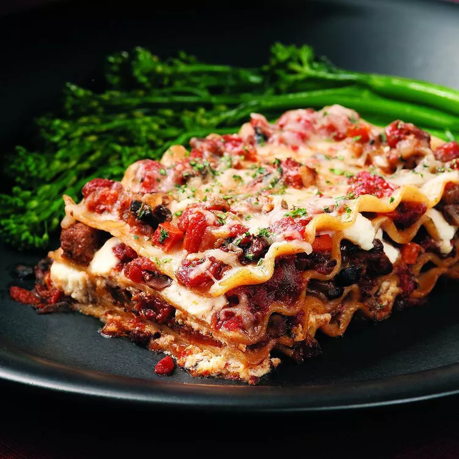

Lasagna

Descreption
Lasagna is a classic Italian dish made with layers of pasta, meat, cheese, and sauce. It's a hearty and comforting meal that is perfect for family gatherings or special occasions.
Ingredients
- Lasagna noodles
- Ground beef or sausage
- Ricotta cheese
- Shredded mozzarella cheese
- Parmesan cheese
- Marinara sauce
- Eggs
- Garlic
- Onion
- Olive oil
- Salt and pepper
Instructions
- Preheat the oven to 375°F (190°C).
- Cook the lasagna noodles according to package instructions. Drain and set aside.
- In a large skillet, heat olive oil over medium heat. Add chopped onion and minced garlic, and sauté until translucent.
- Add ground beef or sausage to the skillet. Cook until browned, breaking it up with a spoon. Season with salt and pepper.
- In a bowl, mix ricotta cheese, egg, and a pinch of salt and pepper.
- Spread a layer of marinara sauce on the bottom of a baking dish.
- Layer noodles, meat mixture, ricotta mixture, and mozzarella cheese in the dish. Repeat layers until all ingredients are used, finishing with a layer of noodles topped with marinara sauce and mozzarella cheese.
- Sprinkle Parmesan cheese on top.
- Cover the dish with aluminum foil and bake for 25 minutes.
- Remove the foil and bake for an additional 15 minutes, or until the cheese is bubbly and golden.
- Let the lasagna rest for 10 minutes before slicing and serving.
Home